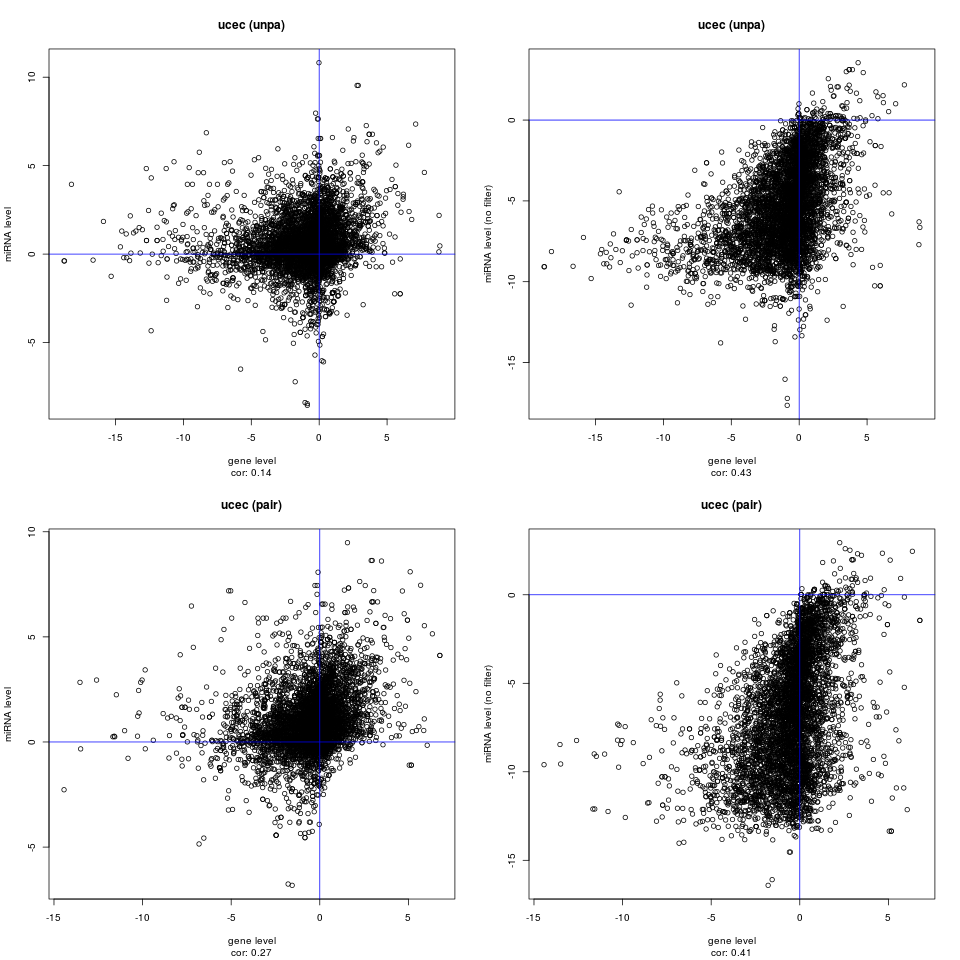

BLCA
A GSA extension of Godard’s approach have been computed straight forward using logistic regression models and our Bioconductor library. This strategy will certainly retain Godard’s methodology good characteristics while incorporating the benefits of the GSA approach over the ORA one.
We did find that the functional results at miRNA level (Godard’s generalization) and the ones at gene level (after transference as originally proposed) have a significantly positive correlation. This indicates that overall both methodologies should provide similar findings. The correlation is not very strong though as the methodologies are explicitly different.
Detailed results and scripts are available in https://github.com/dmontaner-papers/gsa4mirna (folders: supplementary_files_godard and scripts_godard).
For each cancer type, there are several plots displaying the correlation between the GSA analysis carried out at miRNA level (Godard’s paradigm) and at gene level after “transference”. Each dot represents a GO term. X and Y values are derived from p-values and signs of the log odds ratios resulting from the mdgsa analysis (similar to equation 1 of the paper but at GO level instead of at miRNA level).
BLCA

ESCA
KIRP
PAAD
SKCM

BRCA
HNSC
LIHC
PCPG
STAD
CESC

KICH

LUAD

PRAD

THCA

COAD

KIRC
LUSC


READ